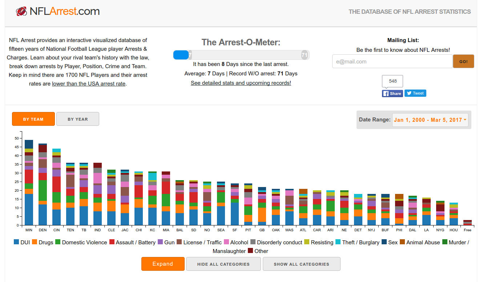
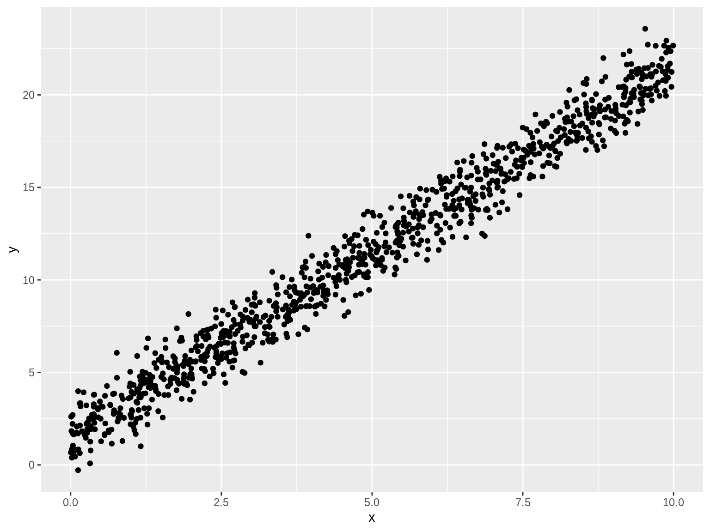
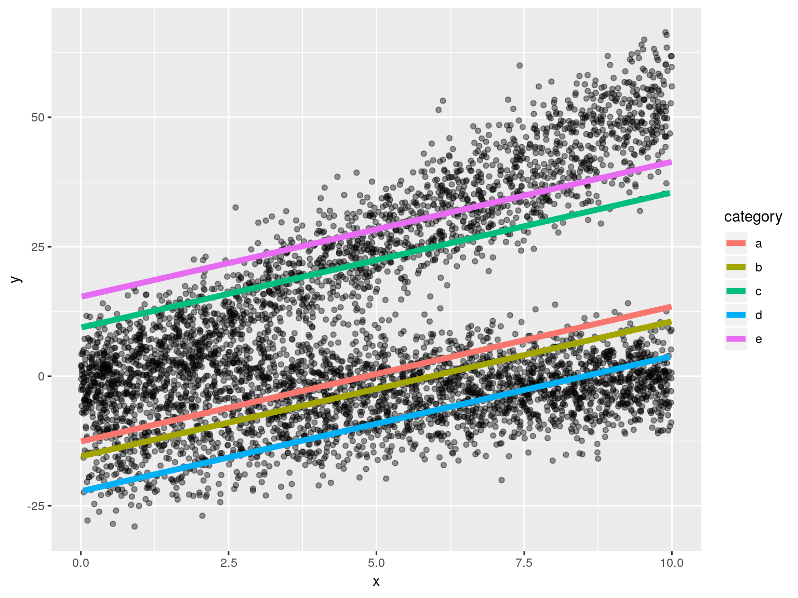

Sparsity Blues
Brian A. Fannin
March 21, 2018
Overview
- Where did this talk come from?
- Categorical vs continuous data
- Naive Bayes
- Decision trees
- Multiple Correspondance Analysis
- Let’s model!
Origins
Origins
- I gave a talk last year about APIs.
- As an afterthought, I tried to fit a model.
- The fits were challenging because the data was largely categorical.
The data

Before anyone gets carried away…
From nflarrests.com:
Keep in mind there are 1700 NFL Players and their arrest rates are lower than the USA arrest rate.
Also: arrest != conviction
What I tried to measure
I tried to measure whether a player would get a second arrest.
- Rate of 1st arrest requires player statistics for each season, which means a second source.
- I’m lazy. Let’s check rate of second arrest.
Just the basic facts
- Number of players who’ve been arrested: 673
- Number of players w/more than one arrest: 146
- Probability of second arrest: 21.7%
So there is a small probability of having more than one arrest. Compare this to Bailey/Simon probability of second accident.
Categorical vs continuous data
There are only 2 kinds of data
- Continuous
- Categorical
- Ordinal
- Unordered
- OK, three would be a mixed distribution (zero-inflated, etc.)
Outcomes (for supervised learning) are either categorical or continuous (classification or regression).
Categorical data
- Gender
- Smoking
- Safe driver program
- Drug testing policy
- …
Basically anything to which you could apply a schedule mod. And also:
- Class code
- Territory
- Zip code
And those are just the ones that might be in a rating manual.
Continuous outcome
sims <- 1e3
tbl_linear <- tibble(
x = runif(sims, 0, 10)
, e = rnorm(sims, sd = 5)
) %>%
mutate(
y = 1.5 + 2 * x + e
)
Categorical outcome
- Logistic regression
- Support vector machine
- Tree methods
Categorical outcome
tbl_logistic <- tbl_linear %>%
mutate(
e = rlogis(1e3)
, latent = -7.5 + 2 * x + e
, y = as.integer(latent > 0)
)
Categorical predictors in a linear model
set.seed(1234)
tbl_one_cat <- function(cat_label = 'a', sims = 1e3) {
slope <- rnorm(1, 2, 2)
intercept <- rnorm(1, 0, 10)
tibble(
x = runif(sims, 0, 10)
, e = rnorm(sims, sd = 5)
, category = rep(cat_label, sims)
) %>%
mutate(
y = intercept + slope * x + e
)
}
tbl_cat <- map_dfr(letters[1:5], tbl_one_cat)Different intercepts

Different slopes
Or both
Issues
- Grouped data is looped data
- Handle this with credibility/hierarchical models
- What if we only have categorical predictors?
The design matrix
| categorya | categoryb | categoryc | categoryd | categorye | categorya:x | categoryb:x | categoryc:x |
|---|---|---|---|---|---|---|---|
| 1 | 0 | 0 | 0 | 0 | 8.6091538 | 0 | 0 |
| 1 | 0 | 0 | 0 | 0 | 6.4031061 | 0 | 0 |
| 1 | 0 | 0 | 0 | 0 | 0.0949576 | 0 | 0 |
| 1 | 0 | 0 | 0 | 0 | 2.3255051 | 0 | 0 |
| 1 | 0 | 0 | 0 | 0 | 6.6608376 | 0 | 0 |
| 1 | 0 | 0 | 0 | 0 | 5.1425114 | 0 | 0 |
| 1 | 0 | 0 | 0 | 0 | 6.9359129 | 0 | 0 |
| 1 | 0 | 0 | 0 | 0 | 5.4497484 | 0 | 0 |
| 1 | 0 | 0 | 0 | 0 | 2.8273358 | 0 | 0 |
| 1 | 0 | 0 | 0 | 0 | 9.2343348 | 0 | 0 |
Let’s try some non-linear methods
Naive Bayes
Bayes
\[Pr(Y=y|X=x)=\frac{Pr(Y = y) * Pr(X=x|Y=y)}{Pr(X=x)}\]
Fit
library(naivebayes)
fit_nb <- naive_bayes(
formula = MultiArrest ~ PositionType
, data = tbl_players
)## ===================== Naive Bayes =====================
## Call:
## naive_bayes.formula(formula = MultiArrest ~ PositionType, data = tbl_players)
##
## A priori probabilities:
##
## FALSE TRUE
## 0.7830609 0.2169391
##
## Tables:
##
## PositionType FALSE TRUE
## D 0.529411765 0.541095890
## O 0.462998102 0.424657534
## S 0.007590133 0.034246575Can we work that out manually?
prior_y <- sum(tbl_players$MultiArrest) / nrow(tbl_players)
prob_x <- sum(tbl_players$PositionType == 'D') / nrow(tbl_players)
tbl_cond <- tbl_players %>% filter(MultiArrest)
prob_x_cond <- sum(tbl_cond$PositionType == 'D') / nrow(tbl_cond)
prior_y * prob_x_cond / prob_x
## [1] 0.2206704
predict(fit_nb, type = 'prob')[1, 'TRUE']
## TRUE
## 0.2206704
prior_y
## [1] 0.2169391Two categories
One:
\[Pr(Y=y|X=x)=\frac{Pr(Y = y) * Pr(X=x|Y=y)}{Pr(X=x)}\]
Two:
\[Pr(Y=y|X=x, Z=z)\]
\[=\frac{Pr(Y = y) * Pr(X=x|Y=y) * Pr(Z=z|Y=y)}{Pr(X=x) * Pr(Z=z)}\]
How about a lot of categories?
fit_nb <- naive_bayes(
formula = MultiArrest ~ TeamAbbr + Conference + Division + Position
+ PositionType + Encounter + CrimeCategory + ArrestSeasonState
+ DayOfWeek
, data = tbl_players
)How do our players look?
Naive Bayes
- Often used in text processing
- Great for a sparse matrix
- It is ‘naive’ because we assume independence between categories
A decision tree
Characteristics of a decision tree
- Divides a sample into regions/subsets
- The ‘prediction’ is a function (usually the mean) of some value within each category
- Membership is assessed by computing some measure of fit. If a split improves the criteria, then it is made.
- Forward only, ‘greedy’
- Number of levels and other criteria control the size and shape of the tree
Measures of fit
For regression:
- Construct regions which minimize residual sum of squares
For classification:
- Construct regions which maximize homogeneity
Linear fit
library(tree)
fit_tree <- tree::tree(formula = y ~ x, data = tbl_linear)
summary(fit_tree)
##
## Regression tree:
## tree::tree(formula = y ~ x, data = tbl_linear)
## Number of terminal nodes: 6
## Residual mean deviance: 23.37 = 23230 / 994
## Distribution of residuals:
## Min. 1st Qu. Median Mean 3rd Qu. Max.
## -15.27000 -3.02700 0.03153 0.00000 3.31700 15.82000Categorical fit
| a | b | output |
|---|---|---|
| red | black | 1 |
| red | white | 1 |
| red | black | 0 |
| blue | white | 0 |
| blue | black | 0 |
Two measures of homogeneity
\[Gini = \sum{p*(1-p)}\]
\[Entropy = -\sum{p*log(p)}\]
Measure total entropy
entropy <- function(y) {
tbl <- tibble(y) %>%
group_by(y) %>%
summarise(prob = n()) %>%
mutate(
prob = prob / sum(prob)
, ent = -prob * log(prob))
tbl$ent %>% sum()
}Measure entropy post-split
entropy_post <- function(tbl, out_col, split_col) {
split_col <- enquo(split_col)
out_col <- enquo(out_col)
tbl %>%
group_by(!! split_col) %>%
summarise(
ent = entropy(!! out_col)
, group_pct = n() / nrow(tbl)
) %>%
ungroup() %>%
summarise(
ent_post = sum(ent * group_pct)
) %>%
pull(ent_post)
}Which column works better on our toy data?
entropy(tbl_toy$output)
## [1] 0.6730117
tbl_toy %>%
entropy_post(output, a)
## [1] 0.3819085
tbl_toy %>%
entropy_post(output, b)
## [1] 0.6591674| a | b | output |
|---|---|---|
| red | black | 1 |
| red | white | 1 |
| red | black | 0 |
| blue | white | 0 |
| blue | black | 0 |
Potential node splits
entropy(tbl_players$MultiArrestNum)
## [1] 0.5230065
tbl_players %>%
entropy_post(MultiArrestNum, PositionType)
## [1] 0.5190857
tbl_players %>%
entropy_post(MultiArrestNum, Season)
## [1] 0.4943877
tbl_players %>%
entropy_post(MultiArrestNum, ArrestSeasonState)
## [1] 0.5218782What splits?
library(rpart)
fit_tree <- tree(
data = tbl_players
, formula = MultiArrestFactor ~ PositionType + Season + ArrestSeasonState)
summary(fit_tree)
##
## Classification tree:
## tree(formula = MultiArrestFactor ~ PositionType + Season + ArrestSeasonState,
## data = tbl_players)
## Variables actually used in tree construction:
## [1] "Season" "PositionType"
## Number of terminal nodes: 4
## Residual mean deviance: 0.9865 = 659.9 / 669
## Misclassification error rate: 0.2125 = 143 / 673Plot the tree
plot(fit_tree)
text(fit_tree, pretty = 0)Note
- Full disclosure: I used both
rpartandtreefor the fit. For reasons that I’ve not yet debugged,rpartgave me no nodes. - A package’s insistence on using factors may cause you to lose your mind.
Bagging/random forests
- Avoid overfit by bootstrapping
- Fit hundreds of resampled trees
- Take the average of results
- We don’t get that sweet tree plot
Random forest
library(randomForest)
fit_forest <- randomForest(
formula = MultiArrestFactor ~ PositionType + Season + ArrestSeasonState
, data = tbl_players
)Variable importance
varImpPlot(fit_forest)Multiple Correspondence Analysis
What is MCA?
- PCA, but for categories
- CA, but for multiple variables
Why MCA?
- Dimensionality reduction
- Could also consider (hierarchical) cluster analysis
- Others?
How does it work?
- Candidly, I can’t easily explain it.
- Creates a “complete disjunctive table”, i.e. a “one hot encoding” table
- This creates points in a high-dimensional space
- Synthesizes new dimensions which capture the most variance between the points
Complete disjunctive table
| id | metro | region |
|---|---|---|
| 1 | urban | north |
| 2 | urban | south |
| 3 | rural | east |
| 4 | urban | north |
CDT, or “one-hot encoding”
tbl_toy_mca_one_hot <- tbl_toy_mca %>%
gather(category, value, -id) %>%
unite(cdt, -id) %>%
mutate(count = 1L) %>%
tidyr::spread(cdt, count, fill = 0L)
tbl_toy_mca_one_hot %>% knitr::kable()| id | metro_rural | metro_urban | region_east | region_north | region_south |
|---|---|---|---|---|---|
| 1 | 0 | 1 | 0 | 1 | 0 |
| 2 | 0 | 1 | 0 | 0 | 1 |
| 3 | 1 | 0 | 1 | 0 | 0 |
| 4 | 0 | 1 | 0 | 1 | 0 |
Extract data for processing
tbl_cats <- tbl_players %>%
ungroup() %>%
select(
CrimeCategory, ArrestSeasonState, Conference
, Division, DayOfWeek, Outcome, Position, PositionType
, Season) %>%
mutate_if(is.character, as.factor)
library(FactoMineR)
fit_mca <- MCA(tbl_cats, graph = FALSE)Visualize in the reduced dimensions

MCA: categorical -> continuous
Call: glm(formula = MultiArrestNum ~ 0 + dim_1 + dim_2, family = binomial(), data = tbl_players)
Deviance Residuals: Min 1Q Median 3Q Max
-1.874 -1.180 -1.159 -1.134 1.233
Coefficients: Estimate Std. Error z value Pr(>|z|)
dim_1 0.29050 0.16491 1.762 0.0781 . dim_2 0.05891 0.13700 0.430 0.6672
— Signif. codes: 0 ‘’ 0.001 ’’ 0.01 ’’ 0.05 ‘.’ 0.1 ‘’ 1
(Dispersion parameter for binomial family taken to be 1)
Null deviance: 932.98 on 673 degrees of freedomResidual deviance: 928.92 on 671 degrees of freedom AIC: 932.92
Number of Fisher Scoring iterations: 3
Let’s model!
How we’ll model
- Pick a performance measure
- Setup cross-validation
- Train some models
- Measure performance
Our performance measure
Misclassification rate
Other options:
- True positive rate
- False positive rate
- Other confusion matrix metrics
- Area under the curve (AUC): A number close to 1 is good
Measures
misclass <- function(tbl_test, fit_obj) {
tbl_test <- tbl_test %>%
mutate(
pred = predict(fit_obj, type = 'class', newdata = tbl_test)
, misclass = pred != MultiArrestFactor
)
sum(tbl_test$misclass) / nrow(tbl_test)
}N-fold cross validation
library(modelr)
set.seed(1234)
tbl_folds <- crossv_kfold(tbl_players, k = 10)tbl_folds
tbl_folds %>% head()
## # A tibble: 6 x 3
## train test .id
## <list> <list> <chr>
## 1 <S3: resample> <S3: resample> 01
## 2 <S3: resample> <S3: resample> 02
## 3 <S3: resample> <S3: resample> 03
## 4 <S3: resample> <S3: resample> 04
## 5 <S3: resample> <S3: resample> 05
## 6 <S3: resample> <S3: resample> 06What’s in tbl_folds?
- Each row in the tibble holds:
- a training
resampleobject - a test
resampleobject - an id
A resample object is a list which contains a data frame and a vector of row indices.
tbl_folds$train[[1]] %>% class()
## [1] "resample"Assess one fold
assess_fold <- function(obj_train, obj_test, method, the_formula) {
tbl_train <- obj_train %>% as.data.frame()
tbl_test <- obj_test %>% as.data.frame()
fit <- do.call(
method
, args = list(formula = the_formula, data = tbl_train))
misclass(tbl_test, fit)
}
one_fold_misclass <- assess_fold(
tbl_folds$train[[1]]
, tbl_folds$test[[1]]
, tree::tree
, as.formula('MultiArrestFactor ~ PositionType + Season'))Assess all folds
cross_validate <- function(formula, tbl_folds, method) {
map2_dbl(
tbl_folds$train
, tbl_folds$test
, assess_fold
, method
, formula
) %>% mean()
}
misclasses <- cross_validate(
as.formula('MultiArrestFactor ~ PositionType + Season')
, tbl_folds
, tree::tree
)
misclasses <- cross_validate(
as.formula('MultiArrestFactor ~ PositionType + Season')
, tbl_folds
, naive_bayes
)Make formulas
make_formula <- function(predictors, target, intercept = TRUE) {
str_predictors <- paste(predictors, collapse = '+')
if (intercept) {
str_formula <- paste(target, '~ 1 + ')
} else {
str_formula <- paste(target, '~')
}
str_formula <- paste(str_formula, str_predictors)
as.formula(str_formula)
}A few formulas
the_formulas <- list(
c('PositionType', 'Season')
, c('PositionType', 'Season', 'DayOfWeek')
, c('PositionType', 'Season', 'DayOfWeek')
, c('PositionType', 'Season', 'DayOfWeek', 'Conference')
, c('PositionType', 'Season', 'DayOfWeek', 'Conference', 'Division')
, c('PositionType', 'Season', 'DayOfWeek', 'Conference', 'Division', 'TeamCity')
) %>%
map(make_formula, 'MultiArrestFactor', intercept = FALSE) %>%
as.vector()
tbl_models <- tibble(
formula = the_formulas
)Our models tibble
| formula |
|---|
| MultiArrestFactor ~ PositionType + Season |
| MultiArrestFactor ~ PositionType + Season + DayOfWeek |
| MultiArrestFactor ~ PositionType + Season + DayOfWeek |
| MultiArrestFactor ~ PositionType + Season + DayOfWeek + Conference |
| MultiArrestFactor ~ PositionType + Season + DayOfWeek + Conference + Division |
| MultiArrestFactor ~ PositionType + Season + DayOfWeek + Conference + Division + TeamCity |
Assess all folds, all formulas, all models
tbl_models <- tbl_models %>%
mutate(
misclass_tree = map_dbl(formula, cross_validate, tbl_folds, tree::tree)
, misclass_nb = map_dbl(formula, cross_validate, tbl_folds, naive_bayes)
)| formula | misclass_tree | misclass_nb |
|---|---|---|
| MultiArrestFactor ~ PositionType + Season | 0.2170544 | 0.2185470 |
| MultiArrestFactor ~ PositionType + Season + DayOfWeek | 0.2170544 | 0.2200176 |
| MultiArrestFactor ~ PositionType + Season + DayOfWeek | 0.2170544 | 0.2200176 |
| MultiArrestFactor ~ PositionType + Season + DayOfWeek + Conference | 0.2170544 | 0.2200176 |
| MultiArrestFactor ~ PositionType + Season + DayOfWeek + Conference + Division | 0.2170544 | 0.2230026 |
| MultiArrestFactor ~ PositionType + Season + DayOfWeek + Conference + Division + TeamCity | 0.2170544 | 0.2423178 |
Conclusion
What did we learn Charlie Brown?
- Categorical data is ubiquitous, but tricky to model
- Non-linear approaches like tree-based methods and Naive Bayes look at categorical differently
- MCA can address “curse of dimensionality” with categorical data
- Let’s all keep doing this! Fitting categorical data is hard. Research is light.
Slides may be found here:
http://pirategrunt.com/sparsity_blues/#/
All of the code - even stuff you didn’t see - is on GitHub